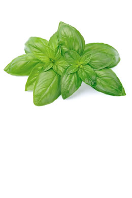
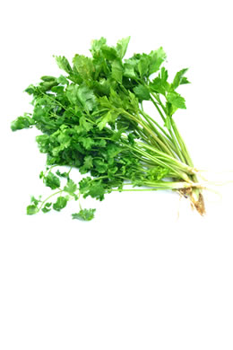
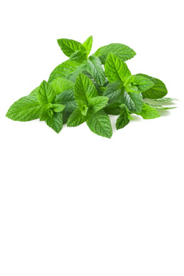
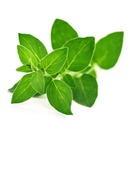
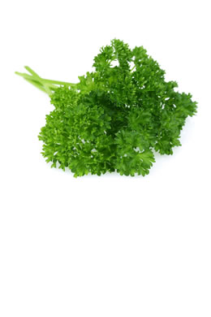
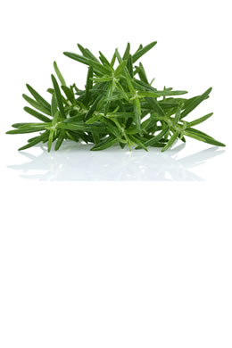
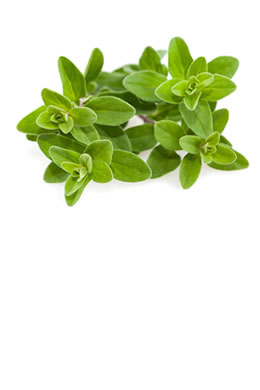

Basil

- Basil is rich in vitamin A, vitamin K, vitamin C, magnesium, iron, potassium and calcium.
- Basil is also a good source of magnesium, which promotes cardiovascular health by prompting muscles and blood vessels to relax, thus improving blood flow and lessening the risk of irregular heart rhythms of the heart muscle or blood vessels.
- Basil leaves come complete with an array of antioxidants and other wonderful phytonutrients. Some of these, orientin and vicenin (which are in the flavonoid family), have been found to 'protect cell structures as well as chromosomes from radiation and oxygen-based damage'.
- Eugenol (one of basil's volatile oils) can also help block the enzyme cyclooxygenase (COX) in the body. This is important because COX is the same enzyme that anti-inflammatory medicines like aspirin and ibuprofen are formulated to help block, making basil a natural anti-inflammatory.
- Basil leaves are effective in alleviating coughing and colds. Chewing fresh leaves or drinking a tea of dried basil leaves can calm coughing and relieve cold and flu. Basil leaves are used as an ingredient in cough syrups and expectorants, and help to mobilise mucus in bronchitis and asthma.
Easy ways to use basil
- Mix angel hair pasta with chopped plum tomatoes and capers. Drizzle warm butter and fresh lemon juice over the pasta. Add in chopped basil leaves. Add salt and pepper to taste.
- Add freshly chopped basil to tomato soup with a little apple juice. Season with salt and a pinch of chilli.
Coriander (Cilantro)

- Fresh coriander is rich in vital vitamins such as A, C, K and traces of B vitamins. 100g of coriander contain 225% of the daily intake of vitamin A. It's also a good source of minerals like potassium, calcium, manganese, iron and magnesium.
- Coriander is an excellent source of omega-3 and omega-6 fatty acids. Omega 3 fatty acids are the building block for several of the body's most widely used families of anti-inflammatory messaging molecules and many other uses. It's also a good source of minerals like potassium, calcium, manganese, iron and magnesium.
- Coriander is one of the very few herbs that is used as a heavy metal detox agent, against mercury, aluminium, lead and others. Make a small bottle of neat, concentrated coriander juice and mix with chlorella powder.
- When juiced and consumed regularly, coriander can help stimulate the secretion of insulin, thereby lowering blood sugar.
- The presence of anti-oxidants, rich phytonutrients, minerals and vitamins in coriander all work synergistically to boost the body's overall immunity system against infection.
Easy ways to use coriander
- Chop one large cucumber. Add chopped tomatoes or a can of diced tomatoes. Add in hot sauce, salt, lime juice and freshly chopped coriander to make a yummy salsa.
- Mix chopped coriander and add it to rice. Drizzle a little fresh lime over the rice and add a little coconut oil.
Mint

- Mint's leaves have powerful antioxidants in the form of essential vitamins like A, B6, C, E, K, beta carotene, folate and riboflavin.
- The beneficial minerals contained in it are calcium, iron, potassium, magnesium and manganese.
- Mint leaves have decongestant properties. The aroma of these leaves is helpful in relieving congestion of the respiratory tract. For asthma patients, mint works as a medicine and provides relaxed breathing; this is one of the reasons why it is used extensively for making inhalers.
- Mint not only cures bad breath but it also fights bacteria responsible for causing cavities. This is the reason why it is used in products like toothpaste, mouthwash and tongue spray. Dried, powdered mint leaves have been used as a teeth whitener since the Middle Ages.
Easy ways to use mint
- Place several leaves in cool water with lemon for a refreshing drink.
- Chop it up and mix it into a salad with cucumbers and tomatoes.
Oregano

- The USDA ranks oregano's antioxidant capacity anywhere from 3 to 20 times higher than other herbs. Oregano has four times the antioxidant power of blueberries, 12 times that of oranges and 42 times greater than apples.
- Oregano contains fibre, iron, manganese, vitamin E, iron, calcium, omega fatty acids, manganese, potassium and tryptophan.
- Oregano contains health benefiting essential oils such as carvacrol, thymol, limonene, pinene, ocimene and caryophyllene. The leaves and flowering stem of the plant have strongly anti-septic, anti-spasmodic, expectorant, stimulant and mildly tonic properties. Its fresh leaves can be eaten for the treatment of colds, influenza, mild fevers, indigestion, headaches and stomach upsets.
- The leaves can also be used in poultices to reduce pain and swelling.
Easy ways to use oregano
- Sprinkle fresh oregano on top of your favourite pasta dishes or pizza recipes.
- Add fresh oregano leaves to Greek salad to spruce up the flavour.
Parsley

- Fresh parsley is rich in many vital vitamins, including vitamin C, B12, K and A. This means parsley keeps your immune system strong and heals the nervous system too.
- It is a good source of iron and folate.
- Regular use of parsley can help control your blood pressure. The folic acid in this herb is like a tonic for your heart.
- Use parsley daily and you'll feel relief from joint pain. That's because the herb has anti-inflammatory properties.
- The activity of parsley's volatile oils qualifies it as a ‘chemoprotective' food and, in particular, a food that can help neutralise particular types of carcinogens (like the benzopyrenes that are part of cigarette smoke and charcoal grill smoke).
Easy ways to use parsley
- Chop it well so it's not coarse. Add it to a pasta salad, with fresh squeezed lemon and olive oil. Add salt and pepper and you have a fresh, delicious dressing for the pasta salad.
- Chop it well. Add it to a bowl of cooked lentils. Mix in some fresh tomatoes, cucumbers, olive oil, lemon, salt and pepper and you have a healthy lentil tabbouleh salad.
Rosemary

- Scientists have found that rosemary contains an ingredient called carnosic acid that is able to fight free radical damage in the brain.
- The herb is exceptionally rich in many B-complex groups of vitamin, such as folic acid, pantothenic acid, pyridoxine and riboflavin.
- Rosemary contains very good amounts of vitamin A, 2924 IU per 100 g; about 97% of RDA. A few leaves a day in the diet would contribute enough of this vitamin. Vitamin A is known to have antioxidant properties and is essential for vision. It is also required for maintaining healthy mucus membranes and skin. Consumption of natural foods rich in vitamin A is known to help the body protect from lung and oral cavity cancers.
- Fresh rosemary leaves are a good source of vitamin C, containing about 22 mg per 100 g, about 37% of RDA. The vitamin is required for the collagen synthesis in the body. Regular consumption of foods rich in vitamin C helps the body protect from scurvy, develop resistance against infectious agents (boosts immunity) and help scavenge harmful, pro-inflammatory free radicals from the body.
- This herb is an excellent source of iron. Iron, being a component of haemoglobin inside the red blood cells, determines the oxygen-carrying capacity of the blood.
Easy ways to use rosemary
- Melt butter and heat it on the stove. Add some fresh rosemary and salt. Let it simmer and release its essence. Use it to season potatoes.
- Rosemary goes beautifully with tomatoes. Add it to your favourite pasta or pizza sauce.
Thyme

- Thyme contains many flavonoid phenolic antioxidants like zea-xanthin, lutein, pigenin, naringenin, luteolin and thymonin. Fresh thyme has one of the highest antioxidant levels among herbs.
- The herb is also a rich source of many important vitamins such as B-complex vitamins, beta-carotene, vitamin A, K, E, C and folic acid.
- Its leaves are one of the richest sources of potassium. Potassium is an important component of cell and body fluids that help to control the heart rate and blood pressure.
- Thyme is high in vitamin B6, furnishing about 27% of the daily recommended intake. B6 keeps up GABA (beneficial neurotransmitter in the brain) levels in the brain, which has a stress buster function.
- The herb makes an excellent solution for gargle and mouthwash, used for dental decay. Also, it is very effective against laryngitis, plaque formation, sore throat, mouth sores, tonsillitis and bad breath.
- Thyme contains thymol, which has antiseptic properties. It can be used as a poultice for insect bites, stings, mastitis and wounds.
Easy ways to use thyme
- When making scrambled tofu, season with parsley, fresh thyme, salt and pepper.
- Blend thyme and rosemary. Brush melted butter on bread dough. Sprinkle the herb mix on top and bake.